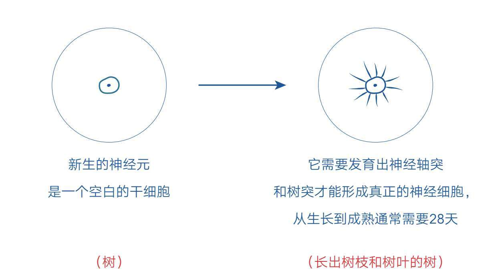
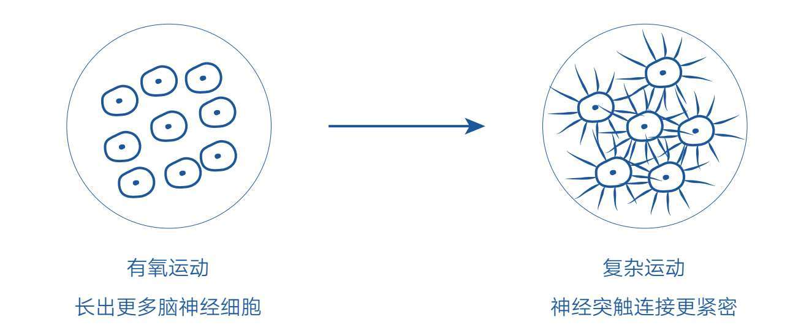

浙江大学是一所人才辈出的知名学府，2019年6月，它竟因几位宿管和保安的事迹被送上了新闻，因为这些宿管和保安展示了远超自己身份定位的追求与技能，进而被人们誉为浙大“扫地僧”。其中两位给我留下了深刻的印象。
一位是玉泉校区老师公寓的宿管阿姨。她来到浙大后，被学校的学习氛围感染，便利用值班时间自学英语。在接受采访时，她说：“看到你们楼层里人才济济，忙忙碌碌都是为了学习，我好像错过了这个时代，我要再变成一个学习的人。”
另一位宿管阿姨徐霞，2010年来到浙大，在与同学们相处的过程中，她感受到学生积极好学的精神，于是也学起了画画。她说：“孩子们那么优秀，我也不能拖了后腿！别人能做到的，我为什么不行？”现在她不仅有不少拿得出手的绘画作品，还成了一位吉他小能手。
当然还有其他“扫地僧”，他们或擅长画画，或精通摄影，或专攻根艺，或善赋诗词，或长于跑步，让人耳目一新。
现在让我们做一个假设：如果这几位宿管和保安并没有来到浙大，而是去了清洁公司或建筑工地（没有鄙视岗位的意思），他们会有这样的命运吗？或许有，但概率极低。毕竟光论努力程度的话，很多相同境遇的同龄人或许比他们付出的更多，却未必有他们的学习成就和生活希望。
这正是环境赋予一个人的力量，它能让一个人产生变好的念头并愿意去努力，还能让这份努力的效果得到放大。从某种程度上讲，环境的力量其实远超个人努力，只是很多人会天然地无视或忽略这一点，认为只要努力就可以成就自己，毕竟努力是看得见的，而环境因素却因为自己身在其中而很难觉察。所以，很多人要么麻木地生活，不知思变；要么盲目地努力，承受着事倍功半之痛。
在诸多咨询中，我也发现不少读者虽然有强烈的改变愿望，行动上也非常努力，但由于他们身处恶劣的成长环境，这些努力收效甚微。为了保护对方的积极性，我只好刻意忽略环境因素，鼓励对方再努力一些，尽量不泼冷水。但现在我决定不再回避，因为环境因素是我们无法避开的，就算现实让人不满意，我们也要鼓足勇气去面对它。我们唯有正视它、看清它，才能有意识地躲避限制，并反过来借势前行。当我们学会借力环境时，自己的努力才会更有成效，而这一切还得从察觉环境这道无形的屏障开始。
我们的生活环境决定了自己每天要见哪些人、做哪些事，这些人和事会直接影响我们的思维和言行，因为人类大脑中有镜像神经元，它会让我们无意识地模仿身边的人和事，所以若是周围的人经常做某些事情，我们也会不自觉地学着做。
比如，当我们看到别人在学习某项新技能时，我们也去学的可能性更大；当身边的人成天无所事事玩游戏时，我们也更容易跟随。这些都是潜意识活动，我们可能根本意识不到自己在受环境影响。
这也解释了另一种现象：一些学习成绩好的人可能连他们自己都搞不清为什么自己会学习好，因为他们确实没有像别人那样特别努力。但如果我们追溯到他们生活的环境，也许能找到一点线索：或许他们的父母是知识分子，在家中学习是常态；或许他们的邻居玩伴都出身于书香门第，从小看大人说话、做事都动脑筋；或许他们家中遍藏书籍，随手可以翻阅；又或许他们因为家境贫穷，生活中少有娱乐的诱惑和干扰，反而拥有了专注的环境和习惯……总之，他们在某些特定环境的影响下，在学习动力、学习习惯或专注力上形成了无法察觉的优势。
就像几位宿管和保安来到大学之后，环境变了，镜像神经元开始发挥新的作用，之前的学习愿望就被唤醒了。他们之所以能快速改变，是因为当他们模仿的对象是“专家型的示范者”时，学习速度会显著提升。
《暗时间：思维改变生活》的作者刘未鹏也曾回忆说，他父亲的书橱里面塞满了字典厚度的大部头，是各种电工手册，所以他从小对大部头的书没有畏惧感，觉得是理所当然的求知途径。不难想象，如果我们成天生活在人们看电视、打麻将、游手好闲的环境里，会大概率地模仿出另一类言行和思维习惯。我们会不自觉地展现和身边人相似的言行，习惯接受高刺激和轻松肤浅的信息，静不下心阅读或思考。所以，即使我们在学习方面表现得很努力，也很难与他人一较高下，因为很多我们觉得不可思议的事情在别人眼里可能早已习以为常。
另外，比起环境的影响，直接告诫自己要努力其实很单薄。因为在一个特定环境中，我们的各个感官同时接收多维度信息——看到的、听到的、闻到的、触到的、尝到的……这些信息量非常之大，只能交由强大的潜意识来处理，而潜意识会首先调动本能冲动和情绪欲望。
我们都知道一个人的情绪力量是很强大的，它怒可火山爆发，丧可心如死灰，而告诫自己要努力不过是理智脑的单维度思考，它在情绪力量面前其实非常干瘪。所以，那些成天吼着要孩子努力学习而自己从不以身作则的家长其实很无力，因为孩子的镜像神经元只有在家长做出相应行为时才会被激活，所以一万句劝说抵不过自己的一次真实示范。
在这方面，《把时间当作朋友》一书的作者李笑来讲过一段有趣的经历。
半年前，我买了一把木吉他送给一个朋友，他家三个孩子。我跟小朋友的妈妈说，要是小朋友小时候就学会弹琴，又那么帅，长大了肯定魅力非凡……几个月过去，据说那吉他放在那里，完全没有动过。最近的某一天，我那朋友在家里组织大伙烤肉吃，我去蹭饭。过程中我把木吉他调好弦，当着小朋友们的面玩了一会儿。据说，此后的每一天，小朋友都缠着他妈妈找吉他老师……
事后他说：“学习兴趣常常并不是被某项技能自动引发的，而是因为见识到真人在实操那项技能，所以才被深度激发，产生兴趣。”
可见，仅仅用嘴说“弹吉他会使人魅力非凡”这种道理并不能真正触动人，而真人实操则能让人听到、看到、触到，甚至是闻到、尝到，从而让人在心里强烈地希望自己也能变成那样，这就是镜像神经元和潜意识的力量，所以无论劝别人还是劝自己，让自己成为榜样或让自己身处理想环境，都是更优的选择。
当然，如果我们不希望自己变得更差，就一定要想办法远离那个不好的环境，因为我们很难在无意识的状态下表现出高于所处环境的言行或追求，我们只会在当前环境中保持最舒适的状态。比如，长期生活在混乱的环境中，就更可能大声说话或随地吐痰，因为周围很多人这么做，柔声细语和讲卫生显得没必要。而在一个人人都不学习的环境里，人们也会自然地认为：学习这件事，没什么必要吧！
让我们把镜头再拉近一点。假设一个人身处良好的大环境，那他一定能成就自己吗？未必！因为还有无孔不入的信息环境和贴身环境会产生阻碍。
自互联网和移动互联网诞生以来，我们便进入了前所未有的信息便捷时代。但信息便捷是一把双刃剑，它至少在两个方面极大地干扰着我们的注意力。
一是信息爆炸了，但知识并没有爆炸。海量的信息不仅增加了我们甄别、筛选知识的难度，还让我们随时随地处于高刺激的即时信息和浮浅信息的包围中。信息环境和真实环境一样，我们接触的信息的质量会影响我们的思维和言行，如果不注意筛选，我们便会陷入不良环境之中。
二是被称为人体新器官的手机，随时可以把我们的时间撕成碎片。你完全可以想象到，即使是一位不用操心一日三餐的高才生，他在自学的时间里，也可能会因为一条手机信息而不断地点击链接——从微信到微博，从抖音到头条，一晃几十分钟过去了——再好的学习环境也会被“浪费”。所以，在未来的世界里，要想成就自己，信息环境不容小觑。
科学研究表明，人的大脑具有适应性。一旦大脑习惯了高频率的快感和刺激，它就很难容忍长时间没有新奇性的东西，只要当前的活动稍微有些无聊，或者有一点点认知上的挑战，我们的大脑就会想从这些低刺激、高价值的活动转向高刺激、低价值的活动。
孩子的年龄越小，他在这方面受到的影响就越深。所以，一个经常刷短视频、沉溺游戏、热衷于谈恋爱、对八卦话题感兴趣的孩子，在面对诸如阅读、钢琴、舞蹈、书法、绘画等相对枯燥的活动时，会更倾向于走神和放弃，而那些从小受到严格管教的孩子则更倾向于专注和坚持，因为他们的大脑从一开始就适应了低刺激的活动，而学习活动几乎都是低刺激性的。
这也是为什么一些贫困家庭的孩子同样可以出类拔萃，因为他们无意间拥有了没有诱惑和干扰的学习环境，不自觉地养成了专注学习的习惯，而一些家庭条件比较好的孩子虽然有机会接触更多优秀的人和事，但也更容易置身于高刺激的环境中。
可见，好的学习环境和家庭贫富没有直接关系。理想的学习环境最好同时具备“能接触优秀的人和事”和“低刺激”两个属性。
当然，我们也不能忽视贴身环境的设置。比如，有序、简洁的环境会让我们的注意力更加集中；随处可见的玩具和杂物则会分散我们的注意力；我们房间里出现的摆设、书桌上放置的物品，甚至墙上的海报（明星还是科学家）都会对我们的潜意识产生无形的暗示。所以要特别关注我们目之所及和触手可及的东西，因为离我们越近的东西就越会被关注，而越被关注的东西就越容易被放大。如果你想让自己变得更好，就要学会通过环境的设置来影响潜意识，帮助自己减小阻力或增加动力。
除此之外，所处环境空间的大小其实也会影响我们的思维和情绪。如果你是一位创意工作者，最好关注一下自己办公空间的大小。在狭小的空间里，我们的思维也容易受限；在空旷的环境中，我们的思维更容易天马行空。当你没有灵感或情绪不好的时候，不妨去空旷的地方走一走、活动活动，或许会有柳暗花明的惊喜。
说到我们的贴身环境，最典型的莫过于自己的身体了，因为身体和大脑是紧密关联的。长期坚持有氧运动不仅可以让我们的身体更健康，也会让我们在思考力、专注力和自控力方面有更好的表现。
另外，语言也会影响我们的思维。正如本书第六章第四节所说，如果我们习惯说“我不行”“我做不到”，就会给潜意识巨大的暗示，然后我们就会真的放弃。但只要在这些否定语句中加上“只是暂时”4个字——“我只是暂时不行”“我只是暂时做不到”，情况就会完全不同。这一点小小的变化，可以让“固定型思维”转变为“成长型思维”[2]，是不是很神奇？
以上环境虽然并不起眼，但都是值得注意的技术细节，关注它们，我们的反制策略会更加有效。
借势而行的道理早在2000多年前就被孟子的母亲知晓了。她为了培养孩子，几度搬家，从墓地到集市，从集市到学堂，最终借助环境的力量将后代培养成才，生动诠释了借力环境的重要性。孟母三迁的典故早就告诉我们：移动到更好的环境中是借力“偷懒”的上上策。
但说实话，换环境的成本很高，尤其是在现代社会。譬如为了进一所好学校，人们得先有买学区房的实力；想要接触优秀的群体和活动，也得具备相应的能力，这并非每个人都能随便拥有的。毕竟这个世界原本就是不公平的，我们出生在什么年代、什么地方、什么家庭都不由自己决定，一旦处于不利位置，大多数人在大多数时候都很难快速摆脱现状。但是“不能快速摆脱”不代表“不能摆脱”，只要我们有改变之心，保持足够的耐心，采取有效的策略，就能立足长远，重塑决策，并在小范围内主动改变，慢慢地让自己移向有利位置。仅仅意识到这一点，我们就足以对未来产生信心和希望，即使当前身处逆境。
所以我们要把“借势环境”这4个字牢牢刻进自己的脑子里，刻意运用这种意识帮自己做出不同于以往的决策和选择。
如果我们身处不利环境，那就要下决心付出更多努力，利用点滴时间早做准备，争取早日去往更理想的环境，毕竟你肯定不愿意在不利的环境中待一辈子。
另外，我们虽然无法快速改变或立即进入理想环境，但是去见识一下还是没有问题的。比如很多家长会在孩子读高中时就带他们去理想大学参观，让孩子置身于那个真实的、优秀的环境之中，这是极为明智的。这会调动孩子的多维度感官，让他们发自内心地产生学习动力，而这种真实环境的激励比父母每天苦口婆心的劝说要好得多。
同理，对于心中有梦想的人来说，花些成本让自己或孩子去见识更美好的生活、接触更厉害的人也是好的举措，这些经历或许会让你或你的孩子心生向往、动力满满，也可能让你或你的孩子遇到生命中的贵人，加速成长。总之，在物理空间内尽可能接近优秀的人和环境，这比待在原地不动要主动和明智得多。
大环境通常难以快速改变，所以我们需要注重选择与决策，因势利导。而越贴近自己的小环境，我们可自主掌控的机会就越大。比如我们可以像整理生活环境一样整理自己的信息环境，取关无用的订阅、卸载多余的软件，保证信息环境纯净、高质量；可以养成“先静音或关闭手机，待完成重要任务后再定时查看信息”的习惯，以降低即时信息的干扰；可以精心布置生活空间，去空旷的环境活动、锻炼身体，优化语言表达等。
这些做法即使我不说，想必你也能从上文推导出来，但如果想灵活应对更多场景，则需要进一步发挥自己的觉察力和想象力。
想在小环境中占据主动权，首先考验的是觉察力。有了觉察，我们就会留意出现在自己眼前的任何信息，关注自己要去哪里、会见到什么人、看到什么事、听到什么话、产生什么想法和念头……这些所见所闻会影响我们的下一个选择，而下一个选择又会塑造下一个环境。这种连续的“选择接力”组成了每个人的人生，所以从一定程度而言，自我觉察直接影响我们的生命质量。
这样的例子不胜枚举，比如《坚毅：培养热情、毅力和设立目标的实用方法》一书就提到一个非常善于觉察的汽车销售员。他说，不论什么时候，只要看到人们成群结队地聚集在餐厅或者饮水机旁，他就本能地不往那些地方去。因为这些人在那样的情境下聚集到一起，总是不可避免地发牢骚，毕竟人们心情不好的时候，总是想找伴，他不想被任何消极的感觉或言语影响，那会使其做不成销售业务。
这确实是个聪明的原则：如果不希望受某些环境的影响，最好的方式就是避免让自己置身其中。换句话说，想办法远离不良环境，就相当于待在更好的环境中。科学研究也发现，那些看起来有强大自控能力的人并非真的比常人更自律，而是因为他们会尽量避免置身于充满诱惑的环境中——这才是他们保持自律的真正“秘诀”。
我们当前的想法会创造下一个环境，而下一个环境又反过来影响我们的想法，环境与想法相互促进，相互塑造。正如脑神经研究专家拉亚·博伊德博士在TED演讲中说的：“你和你的可塑型大脑不断地被周围的世界塑造，你所做的每一件事、遇到的每一件事，以及你所经历的一切，都在改变着你的大脑。这可能带来更好的结果，也可能造成更坏的结果。”所以我们要想办法主导自己的经历，以营造更好的环境来塑造自己。
除此之外，我们还可以借助想象力，开拓一个理想的虚拟环境，进一步摆脱现实力量的影响。
比如，当我们看到身边的人都在玩手机游戏或闲聊打发时间时，可以想象自己当时并未在现场，而是在和另一群优秀的人在一起，此时你就知道自己该做什么了。这种方法可以被称作“跳出空间”。
再比如，当我们沉迷娱乐、虚度光阴时，可以想象十年后的自己是什么样的人，通过未来视角审视现在，就知道现在应该怎么选择了。这种方法可以被称作“跳出时间”。
当然，如果以上办法仍然无法解除现实环境的限制，那也没有关系，我们还有最后的防御手段——阅读。
本节要点
1.人类大脑中有镜像神经元，它会让我们无意识地模仿身边的人和事。
2.学习兴趣常常是因为见识到真人在实操那项技能，才被深度激发。
3.把“借势环境”这4个字牢牢刻进自己的脑子里。
4.自律的真正“秘诀”是尽量避免置身于充满诱惑的环境中。
不管现实环境是否理想，我们都可以用阅读建立一个属于自己的精神环境。因为一本书就是一位高人，而阅读就是和高人聊天，所以只要你愿意阅读，你就有机会拥有一个具备顶级思想的朋友圈。这种机会在现实环境中是很难拥有的，但在精神环境中人人都可以获得。
如果一个人有极佳的学习环境，或许他不用阅读也能从中学到很多有用的东西，但现实中大多数人很少有这样的机会和资源。
怎么办？阅读。
书籍是传承思想的最好介质，顶级的思想都能从书籍中找到，只要选书得当，就能以极低的成本找到各领域内顶级的思想。这些思想通过书籍被清晰无误地记录下来，简洁精练，甚至还经过了上百年时间的沉淀和检验，而你只要花上几十元就可以直接获得。从这个角度看，读书不再是扫视白纸上黑字的重复动作，每读一本书，实际上就是在进行一次名人访谈，就是在和顶级的专家交流谈话。
这种交流谈话既不用花费巨额路费，也不用考虑时间限制，更不用担心对方缺乏耐心。只要你愿意，你随时能接触到顶级的思想。还有比这更舒服的事情吗？可以说读书就是用最低廉的成本获取最高级的成长策略，这是所有人提升自己的最好途径。
除此之外，书籍可能是一段生命经历、一种奇妙见闻，也可能是一场奇思妙想。当我们拿起《活出生命的意义》，就可以跟随维克多·弗兰克尔去纳粹集中营感受绝望中的重生；当我们捧起《三体》，就可以进入刘慈欣描绘的宏伟雄壮的星体文明世界……
脚步不能丈量的地方，文字可以；视线无法触及的地方，文字可以。文字还可以带我们穿越时空与千百年前的顶级思想家交流。时间和空间都不再成为束缚，这可是无法轻易拥有的能量，但阅读能够帮助我们获得。
不读书，只能想自己的所见所闻，而读书，持续地读书，持续地读好书，则相当于和古今中外顶级的思想家处在一个朋友圈。另外，我特别建议年轻人多读一些人物传记，这样，我们一辈子就可以活出好几辈子的精彩。
留心的话，你还会发现几乎所有的书籍都是智者看待事物、做选择、决策的过程。看多了之后，你就能借助他们高明的视角来提升自己的选择能力，而我们每个人的命运不就是各种选择的结果吗？所以，阅读改变命运，就是从改变我们的认知和选择开始的。
现在再看看你身边的书，你还觉得它仅仅是本书而已吗？
远古时代，我们的祖先为了更好地生存，学会了记住那些危险的场景，以便在需要的时候能快速做出反应，否则每次遇到野兽时还要思考到底危不危险，那样他们可能早就被吃掉了。我们大脑就是这样运行的：思考一次，记住，下次遇到同样的情况时只要调用原来的记忆就好了，不需要重新思考，因为思考这件事对大脑来讲是非常缓慢和耗能的。大脑很聪明，能巧妙地化繁为简，但后遗症便是，我们越来越依赖通过调用记忆或者说是利用习惯来做决策。
人，生来追求简单舒适，在无觉知的情况下，能偷懒就一定不会费力，这使绝大多数人天生抵触思考。然而，我们早已从远古文明进化到了科技文明和信息文明，在现代社会，人与人之间的根本差异是认知能力上的差异，而认知能力极度依赖思考能力，可以说，思考能力是我们立足现代社会的根本竞争力。所以，目光长远的人都会主动、刻意地磨炼自己，尽力提高每天的思考密度。
比如查理·芒格就说过：“我这辈子遇到的聪明人没有不每天阅读的，一个都没有。”反观我们自身，思考密度其实是很低的：待人接物、安排日程、参加活动、食堂用餐、使用手机……绝大多数时候只是调用原有的记忆模块，顺着习惯做出反应而已，真正的思考其实并不多。那如何才能快速提高每天的思考密度，让自己在未来更具竞争力呢？
阅读！
阅读可以让我们的思维随时与顶级的思想交锋，对一个主题进行深度全面的理解，并与自己的实际情况充分关联，这种状态在平淡的生活中是很少有的，但是只要拿起书本就可以马上拥有。我们每天在阅读上花费的时间越多，花在无意义的娱乐活动上的时间就越少，思维密度就会越来越大。通过长年累月的积累，我们一定会与那些从不阅读的人拉开距离。
所以，只要有时间，就去阅读吧！不要只用手机来填充空闲时间。阅读其实比玩手机更酷，也更有意义，因为书中的知识会让我们的大脑更智慧，而手机娱乐会让大脑变得更愚钝，所以聪明人会觉得不去阅读是一种损失。
虽然每个人都能拿起书就读，但并不意味着读书这件事门槛低。事实正好相反，阅读是个技术活，如果技术不佳，就会陷入低效的努力。所以，想让自己真正爱上阅读，最好擦亮眼睛，留心以下方面，避免走进误区。
一、读书要先学会选书。初读者在选书的时候往往喜欢向比自己厉害的人索要书单，这样做无可厚非，但我认为更好的方式是先向自己提问：“什么是自己当前最迫切、最需要解决的问题？”毕竟每个人的需求不一样，如果读的书不贴合自己的需求，就很容易陷入为读而读的境地。读书之后若是能立即解决自己最迫切的现实问题，自己就能马上感受到阅读的乐趣与好处，这会激励我们继续读下去。所以书单可以参考，但不要将其视为唯一的选择标准。
另外，我们还要选择那些阅读难度刚好让自己处在舒适区边缘的书，具体来讲就是读起来有一点点难，但又刚好能读懂的书。不管别人说一本书有多好，只要你读起来觉得太难，也没什么兴趣，那最好不要硬着头皮去读，因为它和你之间肯定还存在一些信息缺口。强行去读，自己会很痛苦，阅读的兴趣也很容易被消磨掉。所以，在初读的时候，要让兴趣、难度、需求三者尽可能同时匹配。
如果一本书选得好，那在读完它之后，通常你会有意愿继续读下去。另外，记得留心你认为好的书里面被作者多次提到的书，这些信息往往是你继续发现好书的线索。
选书比读书本身更重要。书籍是精神食粮，我们“吃进”的东西会在我们身体上表现出来，如果不分好坏，见书就读，可能会“读出一身病”，这样读书还不如不读。所以，选书的时候一定要警惕，浮浅的内容加上商业运作，这样的书反而会对你产生不好的影响。多关注那些经过时间检验的书籍通常不会错。
二、阅读是为了改变。很多人以为一本书只要读完，读书的过程就结束了。事实上，阅读只是整个过程的开始，阅读之后的思考、思考之后的实践比阅读本身更加重要（这里主要指非虚构类书籍）。很多人的阅读仅停留在表面，读的时候觉得这里好有道理、那里好有道理，读完之后就不闻不问了，然后迅速转移到下一本书中，这种满足于浏览的阅读造成的一个直接后果便是，一段时间之后再去翻这本书就好像之前没有看过一样，所有的痕迹都烟消云散了。真正读好一本书，往往需要花费数倍于阅读的时间去思考和实践，并输出自己的东西——可能是一篇文章，也可能是养成一个习惯——这个过程比阅读本身要费力得多。
这也回答了另外一个问题，阅读的深度比速度重要，阅读的质量比数量重要。读得多、读得快并不一定是好事，这很可能是自我陶醉的假象。如果读书只是完成了文字扫视，但并不真正理解，那又有什么效率可言呢？如果阅读只是知道了那些道理，而自己并没有发生任何实质改变，那又有什么意义呢？所以读书慢不要紧，即使一个月只能读完1本书，但能读通、读透，产生巨大的改变，那也比3天读1本书，记住的没多少不知要强多少倍。
只要紧紧盯住“改变”这个根本目标，很多阅读障碍就会立即消失。比如我们根本不用在意自己读后记住多少内容，即使整本书都记不起来了也没关系，只要有一个点、一句话触动了自己，并让自己发生了积极的改变，这本书就没有白读。只是很多人会天然地认为，好的阅读应该把书中所有的知识全盘记住、全盘吸收，否则就是低效的、失败的。事实上，这只是一种理想的期望，因为一个显而易见的现实就是，你现在去回想那些读过的书籍，会发现绝大多数内容你已经记不起来了，哪怕是学校里的教材，几年前很熟悉的内容，你现在也想不起多少了。所以，我推荐的阅读方法是先通读一本书，读完后将它放在一边“凉”上几天，等大脑“冷却”后，再合上书问自己“现在还能想起什么”。此时还能想起的知识一定是真正触动你的内容。我们只需把这些内容与自己的生活进行关联、实践，就可以让自己发生高效的改变。
因此，面对海量的知识，你根本不需要焦虑，用不了多长时间，你就可以气定神闲地看着周围的一切，看着有些人极其焦虑地追求速读、刷阅读量，却收集了一大堆和自己的实际需求没有太大关联的知识。如果你能意识到这些，说明你基本上已经跳出这个误区了。
三、高阶读书法。对于阅读来说，跳出误区也只是刚好回到平地，如果还想继续进阶，我想下面这两个建议非常值得你关注。第一个是要特别注意自己在阅读时产生的关联。如果一个知识点让你想起了其他知识，引发了关联，一定要留意，并把它记下来。知识产生关联说明你的知识网络正在形成或加固，这么做还可能创造新知识，这正是学习的核心方法之一。第二个是读写不分家。如果你在阅读后还能把所学知识用自己的语言重新阐释，甚至将它们教授给他人，那这个知识将在你脑中变得非常牢固。
四、有用之书和无用之书。以上读书方法适合阅读非虚构类或自我提升类书籍，但书海无涯，如果我们用一种方法和态度对待所有书籍，那么一定有人会产生这样的困惑：“读自我提升类书籍确实很有用，可是读小说、诗歌、散文一类的书就没用了吗？”
答案当然是否定的。因为我们读的书大致可以分为“有用之书”和“无用之书”两类。像小说、诗歌、散文这类书通常属于“无用之书”，但无用不代表没用，相反，它们有大用。比如，它们可以让人更好地完善自我、理解生命、提升气质、提高审美，甚至创造更美的事物……这些力量是无形的，一旦滋养了人，那这个人在人群中就很容易脱颖而出并感染他人。
只是这种力量需要在一定的场景下才能发挥作用。比如，学生时代，人们普遍喜欢读“无用之书”，因为处在这个阶段的人没有生活压力，可以专注于精神世界；一旦他们在学习上遇到困难或进入职场，就需要“有用之书”来为自己提供力量支撑。毕竟在一个人学习或生活压力非常大的时候，读“无用之书”无法帮助自己快速解决问题或产出价值，但等生活富足了、有闲了，再坐下来读读“无用之书”，一定会更好。
可见，读“有用之书”让人变得更强大，读“无用之书”使人变得更完善。而什么时候需要变强大，什么时候需要变完善，需要看我们所处的人生阶段。
总之，阅读是每个人都能获得的平等、希望和机会，如果你希望自己变得不同，那就请用一生的时间去探索、实践。
本节要点
1.一本书就是一位高人，阅读就是和高人聊天。
2.几乎所有的书籍都是智者看待事物、做选择、决策的过程。看多了之后，我们就能借助他们高明的视角来提升自己的选择能力。
3.选书的时候，尽可能让兴趣、难度、需求三者匹配。
4.阅读只是整个过程的开始，阅读之后的思考、思考之后的实践比阅读本身更加重要。
“四肢发达，头脑简单。”这话不知道坑了多少人。
起初，这句话还是有道理的。古时候人们生活和学习条件有限，体力劳动者为了生计，必须长时间参与劳动生产，难有更多时间和财力去学习知识，因此文化程度普遍较低。而读书人为了考取功名，也只能在室内埋头苦读，体力锻炼相对较少，因而显得弱不禁风。
或许是人们观察到了这种客观现象，自然而然就有了“四肢发达，头脑简单”的描述，又或是读书人为了维护群体尊严，也倾向于宣传这类观点。一来暗示体力劳动者虽然身体强壮，但没什么了不起的；二来暗示读书人弱不禁风并不可耻，有头脑比什么都强。
然而语言会反过来影响思维，这句描述现象（What）的话，可能被不明就里的人理解为原因（Why），比如身体好的人会想：也许自己天生不是读书的料；而学习好的人会想：不锻炼也无所谓，四肢发达，头脑也许会变笨。似乎体力和脑力之和是一个固定量，一方面占比多了，另一方面自然会少。然而事实果真如此吗？拨开迷雾之后，真相或许会让你大吃一惊。
英国科学家弗朗西斯·高尔顿发明了统计学上的一个重要概念：相关性。他发现，如果一个人的智力水平高，那这个人的其他方面往往也不错，比如自律能力、经济水平，包括身体条件都更好，也就是说，好的事物往往是正相关的。那能不能由此推导出身体好和头脑好也是正相关的呢？我认为答案是肯定的。
因为运动能够调节人体的各种激素，使人达到最佳状态，使身体这个内部生态系统充满能量和活力。时常运动的人，体内生态系统犹如一汪清泉；而久坐不动的人，体内生态系统则更像一潭死水。长此以往，一些不愿意运动的人更容易滋生焦虑、抑郁、消沉、低落等各种不良情绪，并且压力产生的毒性会破坏大脑中几十亿个神经细胞之间的连接，逐渐使大脑的部分区域萎缩，这表明，一个长期缺乏运动的人可能会变“笨”。
而另一个让人觉得不可思议的好消息是运动能够使大脑长出更多新的神经元，这意味着运动可以在物理层面让人变得更“聪明”。要知道我们每个人在遗传父母的基因时，大脑起始水平必然有差异，比如在相同的脑区，有的人神经细胞多，有的人神经细胞少，因此，不同的孩子在语言、图形、音律等方面体现出明显的天赋差异。但凭借后天的学习和发育，这些生理差异逐渐缩小，人与人之间的角力都集中在努力程度上。然而，脑科学的发现却提示我们运动能够启动“神经新生”，同时由于注意力、意识和运动脑区之间有大量重叠，所以运动也可以直接从物理层面提升我们的专注力、自控力和思维能力等。
由此可以做出如下推演：运动不仅能使人身材更好、精神更佳，同时能增强大脑功能，提升注意力、记忆力、理解力、自制力，从而增强学习效果，让人创造更大的成就，获取更多资源。
运动，正是人生幸福正相关因素的出发点。
即使得出上述结论，我们依旧无法打消这样的疑虑：为什么很多人积极投身运动，却并没有体现出正相关的趋势呢？这个问题很值得探究，好在背后原因确实有据可依。
一个不可忽略的信息是，科学研究虽然证实运动能使大脑生长出新的神经元，但这些神经元需要经过发育，长出神经轴突和树突，才能形成真正的神经细胞。简单地说，新生的神经元就像一棵树，它需要长出树枝和树叶才能活下去（见图8-1）。
所以运动不是关键，运动之后的活动安排及环境刺激才是关键。有效的模式是这样的：在运动后的1～2小时内进行高强度、高难度的脑力活动，比如阅读、解题、背记、写作、编程等，或是一些需要复杂技巧的体力活动，诸如舞蹈、钢琴，以及参加不同于以往的社交活动，如接触新的环境、人物或事物，这么做可以让新的神经元受到刺激，不断生长。换句话说，运动之后，脑子需要充分接受考验或挑战，才能让自己不断地变“聪明”。

图8-1 新生的神经元是空白的干细胞
并且，“运动+学习”的模式需要坚持，因为新的神经元从生长到成熟通常需要28天。这对脑力劳动者绝对是个好消息，如果长期坚持“运动+学习”模式，脑子会不知不觉地变得越来越灵活。大脑神经的连接越来越多，信号通路越来越宽，反应速度越来越快，人学习起来就更容易，就像一台计算机的运行内存在不断扩容，硬件条件变得越来越强。
在校学生更是如此。因为脑力活动原本就是他们的“主业”，如果辅以“运动+学习”模式，把复杂的学习内容放在运动之后，便能有效提升学习能力。那些注重体育活动的学校，学生的综合素质往往不差。所以，不要成天闷在房间里学习，时常出去跑跑跳跳再学习，是非常有益的。
绝大多数运动者的硬伤就在这里：运动之后缺乏主动学习的意识和习惯。他们习惯于在运动后看电视、刷手机、玩游戏、逛街、聚会、和朋友们闲聊，甚至直接睡觉，做那些无须动脑或让自己感到很舒服的事。真的很遗憾，那些好不容易生长出来的神经元随即消散，他们因此错失了变“聪明”的机会。
听到这个好消息，说不定你已经迫不及待地想去准备跑鞋了，但别着急，先了解一下如何科学地运动或许对你更有帮助。有效的运动不是高强度地“折磨”自己，也不是在室外闲庭信步，而是保持适当的心率。就减肥瘦身的有氧运动而言，专业的建议是心率保持在最大心率（220—年龄）的60%～80%之间，刚好处于身体的舒适区边缘，每天活动半小时，就能产生极好的效果。
如果觉得麻烦，有一个简单的方法：让自己保持做有氧运动时有些气喘的状态。比如跑步时，保持足够快的速度直到有些气喘，持续1～2分钟，然后改为快走，调整呼吸，重复即可，这个活动量几乎每个人都可以达到。
如果你在学校，我建议你课间一定要出去活动活动，让自己达到有些气喘的状态再进教室，这样，你大脑中的血氧含量会大幅提高，非常有利于下节课保持注意力。即使下雨，你也可以在教学楼的楼梯上跑一遍，尽量不要一直待在教室里。
提到运动，我猜绝大多数人会选择跑步，但要想获得更好的效果，最好结合复杂运动。比如在10分钟的有氧热身之后练习瑜伽、舞蹈、体操、太极等，这些复杂的活动能让大脑的全部神经细胞参与其中。活动越复杂，神经突触的联系也就越复杂，突触生长也更密集，所以，更好的运动方式一定同时包含有氧运动和复杂运动（见图8-2）。

图8-2 复杂运动促使神经细胞的连接更紧密
200万年前，人类一直过着“狩猎采集”的生活，我们的祖先为了果腹，平均每天必须行走8～16千米。到最近的1万年前，人类才进入农耕文明，直至最近的100年，人类才进入物质丰富时代，不再需要为寻找食物耗费那么多能量。
在人们的观念中，运动只是为了让自己拥有更健康的身体和更健美的体型，健身房里的宣传画、朋友圈里的运动照，都在宣扬这种观点。但事实上，运动更大的意义不在于健身，而在于健脑，它不仅能使人更加乐观，还能使头脑更加灵活，最终使健康水平和认知水平实现双重提升。
但人们一旦习惯久坐，就不愿意活动了，不知不觉进入了生活质量的下行通道——越低落、消沉，越不想运动；越不运动，越低落、消沉，而打破怪圈的最好办法正是去“挥洒汗水”——穿起跑鞋狂奔，拿起球拍挥打……
好在觉醒的人越来越多，人们开始相互鼓励去学习和运动，甚至还流行起了这样的文艺箴言：身体和灵魂，总有一个要在路上。
语言是会影响思维的，“四肢发达，头脑简单”这句话应该修改为“四肢发达，头脑更发达”才合理，而身体和灵魂也并非只能二选一，你不能只学习不运动，或只运动不学习，也不能随心情交替进行这两项活动。我相信你现在肯定更倾向于接受这样的表述：灵魂想要走得远，身体必须在路上。
认知越清晰，行动越坚定。强健的身体既是大脑贴身的生理环境，也是大脑工作的最佳保障。
从现在开始，给自己的运动计划赋予新的意义吧！
本节要点
1.时常运动的人，体内生态系统犹如一汪清泉；而久坐不动的人，体内生态系统则更像一潭死水。
2.运动能够使大脑长出更多新的神经元，这意味着运动可以在物理层面让人变得更“聪明”。
3.由于注意力、意识和运动脑区之间有大量重叠，所以运动也可以直接从物理层面提升我们的专注力、自控力和思维能力等。
4.运动不是关键，运动之后的活动安排及环境刺激才是关键。把复杂的学习内容放在运动之后，便能有效提升学习能力。
5.运动是消除抑郁的良药。
[1]此处的目标任务仅为说明“设下限、不设上限”的方法。——编者注
[2]固定型思维和成长型思维引自《终身成长》，前者指凡事以他人和外界评价为标准的行为模式，后者指凡事以自己能否成长和改变为标准的行为模式。